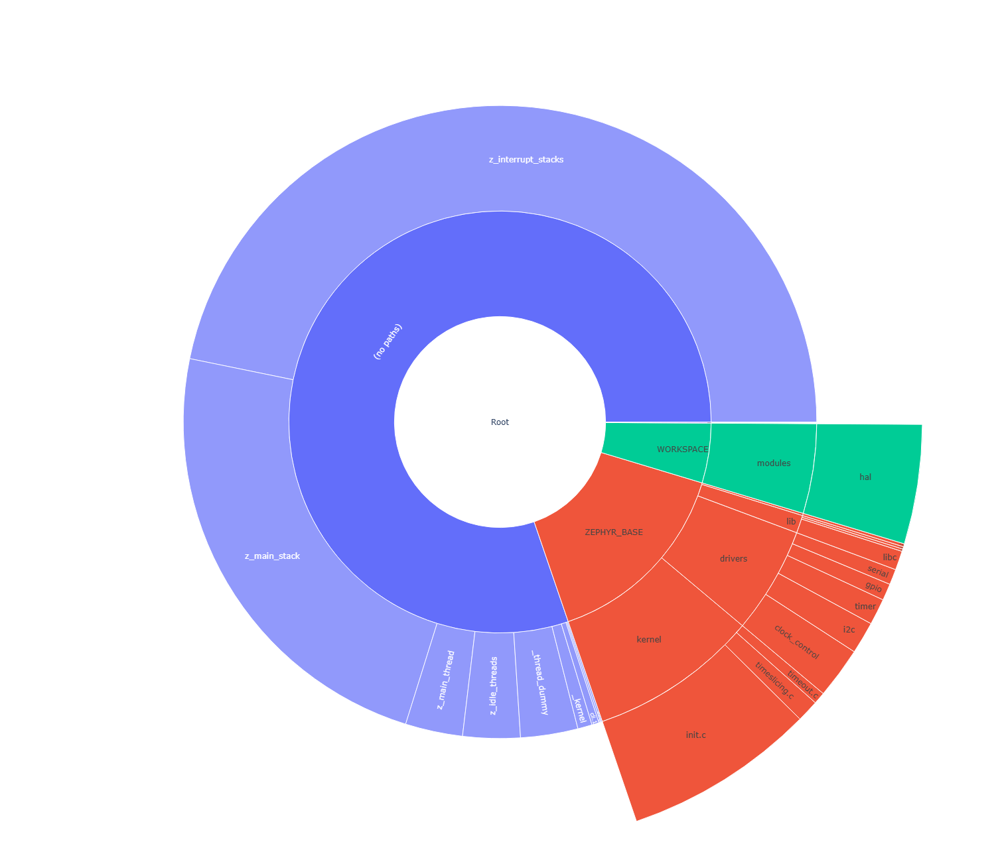
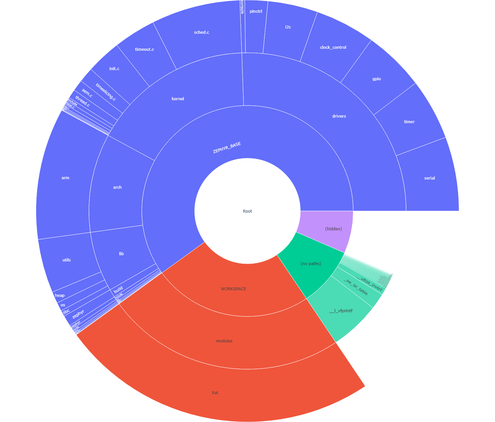
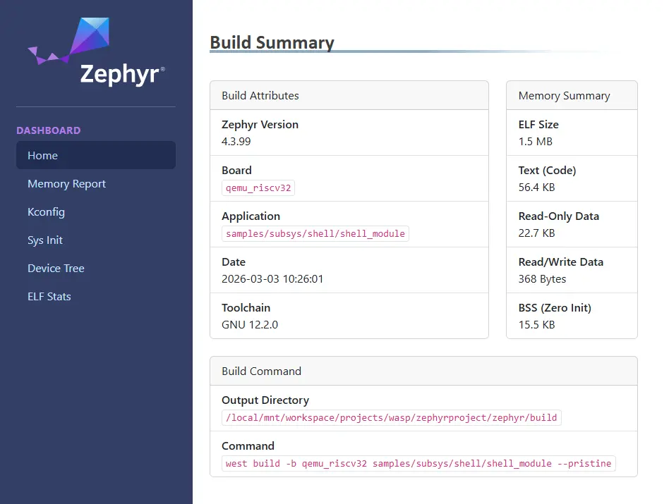

Optimization Tools
The available optimization tools let you analyse Footprint and Memory Usage and Data Structures using different build system targets. An HTML dashboard can also be generated for a more dynamic view of build artifacts and metrics.
Footprint and Memory Usage
The build system offers 3 targets to view and analyse RAM, ROM and stack usage in generated images. The tools run on the final image and give information about size of symbols and code being used in both RAM and ROM. Additionally, with features available through the compiler, we can also generate worst-case stack usage analysis.
Some of the tools mentioned in this section are organizing their output based on the physical organization of the symbols. As some symbols might be external to the project’s tree structure, or might lack metadata needed to display them by name, the following top-level containers are used to group such symbols:
Hidden - The RAM and ROM reports list all processing symbols with no matching mapped files in the Hidden category.
This means that the file for the listed symbol was not added to the metadata file, was empty, or was undefined. The tool was unable to get the name of the function for the given symbol nor identify where it comes from.
No paths - The RAM and ROM reports list all processing symbols with relative paths in the No paths category.
This means that the listed symbols cannot be placed in the tree structure of the report at an absolute path under one specific file. The tool was able to get the name of the function, but it was unable to identify where it comes from.
Note
You can have multiple cases of the same function, and the No paths category will list the sum of these in one entry.
Build Target: ram_report
List all compiled objects and their RAM usage in a tabular form with bytes per symbol and the percentage it uses. The data is grouped based on the file system location of the object in the tree and the file containing the symbol.
Use the ram_report target with your board, as in the following example.
If you are using Sysbuild (System build), see Dedicated image build targets instead.
Using west:
# From the root of the zephyr repository
west build -b reel_board samples/hello_world
west build -t ram_report
Using CMake and ninja:
# From the root of the zephyr repository
# Use cmake to configure a Ninja-based buildsystem:
cmake -Bbuild -GNinja -DBOARD=reel_board samples/hello_world
# Now run the build tool on the generated build system:
ninja -Cbuild ram_report
These commands will generate something similar to the output below:
Path Size % Address
========================================================================================
Root 4637 100.00% -
├── (hidden) 4 0.09% -
├── (no paths) 2748 59.26% -
│ ├── _cpus_active 4 0.09% 0x20000314
│ ├── _kernel 32 0.69% 0x20000318
│ ├── _sw_isr_table 384 8.28% 0x00006474
│ ├── cli.1 16 0.35% 0x20000254
│ ├── on.2 4 0.09% 0x20000264
│ ├── poll_out_lock.0 4 0.09% 0x200002d4
│ ├── z_idle_threads 128 2.76% 0x20000120
│ ├── z_interrupt_stacks 2048 44.17% 0x20000360
│ └── z_main_thread 128 2.76% 0x200001a0
├── WORKSPACE 184 3.97% -
│ └── modules 184 3.97% -
│ └── hal 184 3.97% -
│ └── nordic 184 3.97% -
│ └── nrfx 184 3.97% -
│ └── drivers 184 3.97% -
│ └── src 184 3.97% -
│ ├── nrfx_clock.c 8 0.17% -
│ │ └── m_clock_cb 8 0.17% 0x200002e4
│ ├── nrfx_gpiote.c 132 2.85% -
│ │ └── m_cb 132 2.85% 0x20000060
│ ├── nrfx_ppi.c 4 0.09% -
│ │ └── m_channels_allocated 4 0.09% 0x200000e4
│ └── nrfx_twim.c 40 0.86% -
│ └── m_cb 40 0.86% 0x200002ec
└── ZEPHYR_BASE 1701 36.68% -
├── arch 5 0.11% -
│ └── arm 5 0.11% -
│ └── core 5 0.11% -
│ ├── mpu 1 0.02% -
│ │ └── arm_mpu.c 1 0.02% -
│ │ └── static_regions_num 1 0.02% 0x20000348
│ └── tls.c 4 0.09% -
│ └── z_arm_tls_ptr 4 0.09% 0x20000240
├── drivers 258 5.56% -
│ ├── ... ... ...%
========================================================================================
4637
Build Target: rom_report
List all compiled objects and their ROM usage in a tabular form with bytes per symbol and the percentage it uses. The data is grouped based on the file system location of the object in the tree and the file containing the symbol.
Use the rom_report target with your board, as in the following example.
If you are using Sysbuild (System build), see Dedicated image build targets instead.
Using west:
# From the root of the zephyr repository
west build -b reel_board samples/hello_world
west build -t rom_report
Using CMake and ninja:
# From the root of the zephyr repository
# Use cmake to configure a Ninja-based buildsystem:
cmake -Bbuild -GNinja -DBOARD=reel_board samples/hello_world
# Now run the build tool on the generated build system:
ninja -Cbuild rom_report
These commands will generate something similar to the output below:
Path Size % Address
========================================================================================
Root 27828 100.00% -
├── ... ... ...%
└── ZEPHYR_BASE 13558 48.72% -
├── arch 1766 6.35% -
│ └── arm 1766 6.35% -
│ └── core 1766 6.35% -
│ ├── cortex_m 1020 3.67% -
│ │ ├── fault.c 620 2.23% -
│ │ │ ├── bus_fault.constprop.0 108 0.39% 0x00000749
│ │ │ ├── mem_manage_fault.constprop.0 120 0.43% 0x000007b5
│ │ │ ├── usage_fault.constprop.0 84 0.30% 0x000006f5
│ │ │ ├── z_arm_fault 292 1.05% 0x0000082d
│ │ │ └── z_arm_fault_init 16 0.06% 0x00000951
│ │ ├── ... ... ...%
├── boards 32 0.11% -
│ └── arm 32 0.11% -
│ └── reel_board 32 0.11% -
│ └── board.c 32 0.11% -
│ ├── __init_board_reel_board_init 8 0.03% 0x000063e4
│ └── board_reel_board_init 24 0.09% 0x00000ed5
├── build 194 0.70% -
│ └── zephyr 194 0.70% -
│ ├── isr_tables.c 192 0.69% -
│ │ └── _irq_vector_table 192 0.69% 0x00000040
│ └── misc 2 0.01% -
│ └── generated 2 0.01% -
│ └── configs.c 2 0.01% -
│ └── _ConfigAbsSyms 2 0.01% 0x00005945
├── drivers 6282 22.57% -
│ ├── ... ... ...%
========================================================================================
21652
Build Targets: ram_plot/rom_plot
Similar to the ram_report and rom_report build targets, these targets generate memory usage
reports in a sunburst chart as a visual representation.
A user can click on segments to navigate through the directory structures, and hover over segments
to get more details.
Running the targets will first generate the CLI report and then open a browser window.
Using west:
# From the root of the zephyr repository
west build -b reel_board samples/hello_world
west build -t ram_plot
Using CMake and ninja:
# From the root of the zephyr repository
# Use cmake to configure a Ninja-based buildsystem:
cmake -Bbuild -GNinja -DBOARD=reel_board samples/hello_world
# Now run the build tool on the generated build system:
ninja -Cbuild ram_plot

And similarly for the ROM usage.
Using west:
# From the root of the zephyr repository
west build -b reel_board samples/hello_world
west build -t rom_plot
Using CMake and ninja:
# From the root of the zephyr repository
# Use cmake to configure a Ninja-based buildsystem:
cmake -Bbuild -GNinja -DBOARD=reel_board samples/hello_world
# Now run the build tool on the generated build system:
ninja -Cbuild rom_plot

Build Target: puncover
This target uses a third-party tool called puncover which can be found at https://github.com/HBehrens/puncover. When this target is built, it will launch a local web server which will allow you to open a web client and browse the files and view their ROM, RAM, and stack usage.
Before you can use this target, install the puncover Python module:
pip3 install --user puncover
Warning
This is a third-party tool that might or might not be working at any given time. Please check the GitHub issues, and report new problems to the project maintainer.
After you installed the Python module, use puncover target with your board,
as in the following example.
If you are using Sysbuild (System build), see Dedicated image build targets instead.
Using west:
# From the root of the zephyr repository
west build -b reel_board samples/hello_world
west build -t puncover
Using CMake and ninja:
# From the root of the zephyr repository
# Use cmake to configure a Ninja-based buildsystem:
cmake -Bbuild -GNinja -DBOARD=reel_board samples/hello_world
# Now run the build tool on the generated build system:
ninja -Cbuild puncover
The puncover target will start a local web server on localhost:5000 by default.
The host IP and port the HTTP server runs on can be changed by setting the environment
variables PUNCOVER_HOST and PUNCOVER_PORT.
To view worst-case stack usage analysis, build this with the
CONFIG_STACK_USAGE enabled.
Using west:
# From the root of the zephyr repository
west build -b reel_board samples/hello_world -- -DCONFIG_STACK_USAGE=y
west build -t puncover
Using CMake and ninja:
# From the root of the zephyr repository
# Use cmake to configure a Ninja-based buildsystem:
cmake -Bbuild -GNinja -DBOARD=reel_board -DCONFIG_STACK_USAGE=y samples/hello_world
# Now run the build tool on the generated build system:
ninja -Cbuild puncover
Data Structures
Build Target: pahole
Poke-a-hole (pahole) is an object-file analysis tool to find the size of the data structures, and the holes caused due to aligning the data elements to the word-size of the CPU by the compiler.
Poke-a-hole (pahole) must be installed prior to using this target. It can be obtained from https://git.kernel.org/pub/scm/devel/pahole/pahole.git and is available in the dwarves package in both fedora and ubuntu:
sudo apt-get install dwarves
Alternatively, you can get it from fedora:
sudo dnf install dwarves
After you installed the package, use pahole target with your board,
as in the following example.
If you are using Sysbuild (System build), see Dedicated image build targets instead.
Using west:
# From the root of the zephyr repository
west build -b reel_board samples/hello_world
west build -t pahole
Using CMake and ninja:
# From the root of the zephyr repository
# Use cmake to configure a Ninja-based buildsystem:
cmake -Bbuild -GNinja -DBOARD=reel_board samples/hello_world
# Now run the build tool on the generated build system:
ninja -Cbuild pahole
Pahole will generate something similar to the output below in the console:
/* Used at: [...]/build/zephyr/kobject_hash.c */
/* <375> [...]/zephyr/include/zephyr/sys/dlist.h:37 */
union {
struct _dnode * head; /* 0 4 */
struct _dnode * next; /* 0 4 */
};
/* Used at: [...]/build/zephyr/kobject_hash.c */
/* <397> [...]/zephyr/include/zephyr/sys/dlist.h:36 */
struct _dnode {
union {
struct _dnode * head; /* 0 4 */
struct _dnode * next; /* 0 4 */
}; /* 0 4 */
union {
struct _dnode * tail; /* 4 4 */
struct _dnode * prev; /* 4 4 */
}; /* 4 4 */
/* size: 8, cachelines: 1, members: 2 */
/* last cacheline: 8 bytes */
};
/* Used at: [...]/build/zephyr/kobject_hash.c */
/* <3b7> [...]/zephyr/include/zephyr/sys/dlist.h:41 */
union {
struct _dnode * tail; /* 0 4 */
struct _dnode * prev; /* 0 4 */
};
...
...
Dashboard
An HTML dashboard can be generated that consolidates the various tool outputs and artifacts into one simple view. In addition to a basic summary of the build results, the following details are included:
Full memory reports (ram, rom) in drill-down table form as well as plots (as per the
footprint,ram_plot, androm_plotbuild targets).Kconfig symbol values and sources (as per the
traceconfigbuild target).Init-levels with function names, and report on any priority issues with sys-init against devicetree (as per the
initlevelsbuild target).Navigable devicetree view with property values and details from any bindings.
Use the dashboard target with your board, as in the following example.
If you are using Sysbuild (System build), see Dedicated image build targets instead.
Using west:
# From the root of the zephyr repository
west build -b reel_board samples/hello_world
west build -t dashboard
Using CMake and ninja:
# From the root of the zephyr repository
# Use cmake to configure a Ninja-based buildsystem:
cmake -Bbuild -GNinja -DBOARD=reel_board samples/hello_world
# Now run the build tool on the generated build system:
ninja -Cbuild dashboard
This will generate the following output file and open it in the default browser:
build/dashboard/index.html
